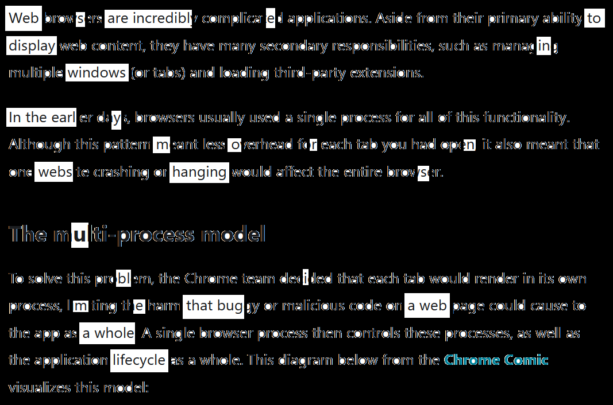
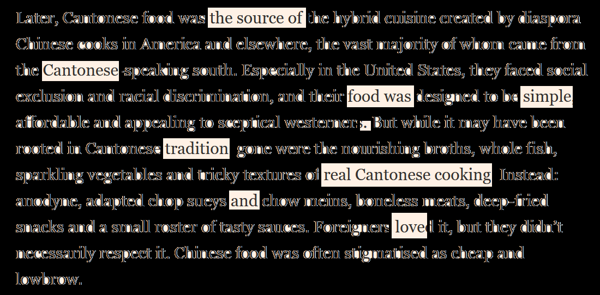
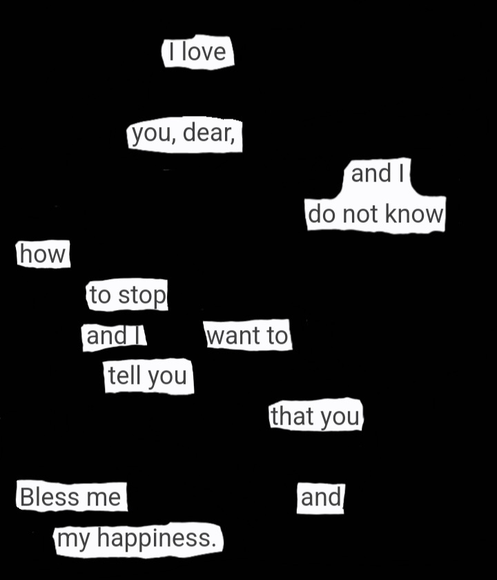
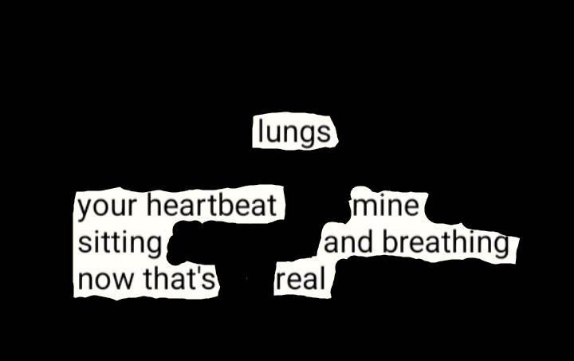
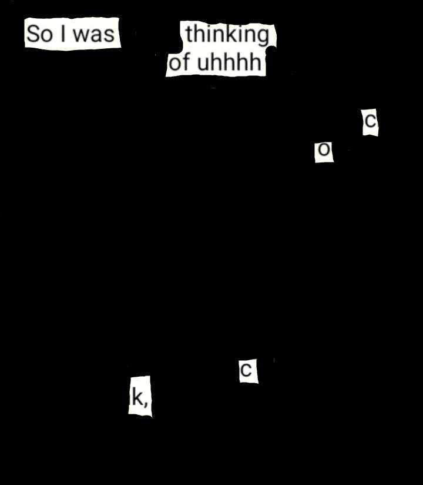
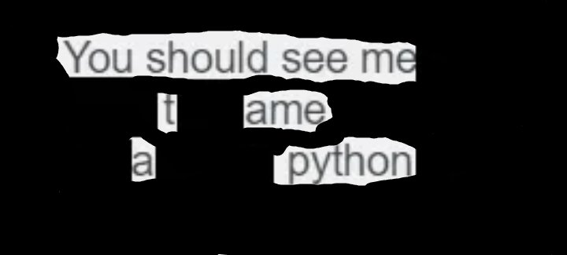

webs (2023)

source:
Electron tutorial (process model page), OpenJS Foundation and Electron contributors (2023)
cantonese food (2023)

source:
'Cantonese food is not what you think it is', Fuchsia Dunlop, Financial Times (2023)
a letter from lucy (2023)

source: letter from lucy westenra to mina murray on the 11th of may
(Dracula, 1897, by Bram Stoker)
lungs (2023)

source: message from a friend (2023)
thinking (2023) [nsfw]

source: message from a friend (2023)
python (2020)

source: message from a friend (2020)